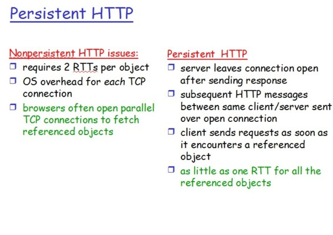
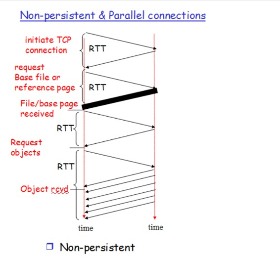
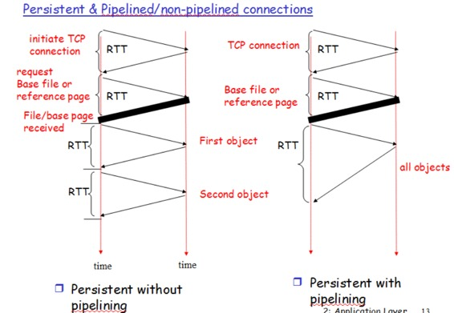

The Hypertext Transfer Protocol (HTTP) is an application-level protocol that uses TCP as an underlying transport and typically runs on port 80. HTTP is a stateless protocol i.e. server maintains no information about past client requests.
HTTP Connections
- Non-Persistent
- Persistent
Before starting with persistent and non-persistent HTTP connection lets know what is a RTT.
RTT-> Time for a small packet to travel from client to server and back.
RTT= 2*propagation time
1. For an connection Persistent or Non-persistent it is sure that to initiate TCP connection one RTT is used.
2. One RTT is used for HTTP request and first few bytes to HTTP response to return.
So in order to know total file transmission time->
total = 2RTT+transmit time
Difference between Persistent & Non-Persistent connection.

Non-Persistent Connection
- Without parallel connection
- With parallel connection
Without parallel connection Non-Persistent
Each objection takes two RTT (assuming no window limit) one for TCP connection and other for HTTP image/text file.
With parallel connection Non-Persistent

Persistent connection
- Non-Pipelined
- Pipelined

In Non-pipeline connection we first establish connection which takes two RTT then we send all the objects images/text files which takes 1 RTT each (TCP for each object is not required).
In Pipelined connection 2RTT for connection establishment and then 1RTT(assuming no window limit) for all the objects i.e. images/text.
Advantages of persistent connections :
1) Lower CPU and memory usage because there are less number of connections.
2) Allows HTTP pipelining of requests and responses.
3) Reduced network congestion (fewer TCP connections).
4) Reduced latency in subsequent requests (no handshaking).
5) Errors can be reported without the penalty of closing the TCP connection.
Disadvantages of persistent connections :
Resources may be be kept occupied even when not needed and may not be available to others.
Most of the modern browsers like Chrome, Firefox and Internet Explorer use persistent connections.
Reference : https://en.wikipedia.org/wiki/HTTP_persistent_connection